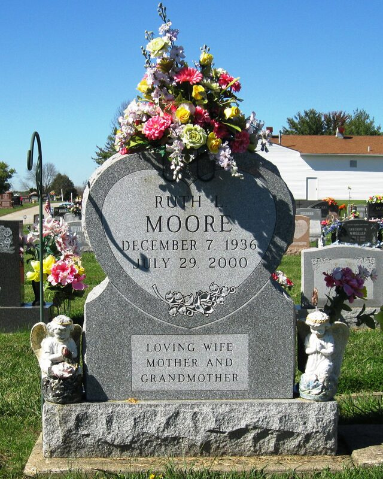

Elmer Ellis Brewster (1935–1993) — 1951 elopement is family-account evidence only; no marriage certificate or divorce decree located
Gobelle Moore (1933–2011) — independently identified as Ruth's husband/second wife relationship in both Gobelle's obituary and his son's obituary; exact marriage date unknown
Children attributed by family account
Elmer's 1993 obituary names these five children; a family account attributes them to Ruth and Elmer, but original parentage records for each child have not yet been inspected.
7 Dec 1936 · age 0 Born, Cincinnati, Ohio, to Ray Henry Wainscott and Elizabeth Mae Lawrence
1938 and 1942 · age 1 and 5 Her sisters Margaret Lane (1938) and Wanda Louise (1942) died young
17 Feb 1951 · age 14 Family account says she eloped with Elmer Brewster, aged 16; no marriage certificate located
Early 1950s Lived with Elmer in a small camper, their "house," at Barstow, California, while he served in the Marines (after January 1952)
Date unknown The end date and legal sequence of the reported Elmer marriage remain unknown; Elmer's 1993 obituary names Mary Jane as his wife at death
About 1998–2000 · age 61–63 Was identified as Gobelle Moore's second wife in his memorial/obituary records; exact marriage date unknown
29 Jul 2000 · age 63 Died, Kettering, Montgomery County, Ohio, as Ruth Lee Moore
2000 Buried, Byron Cemetery, Fairborn, Greene County, Ohio
Life Story
Ruth Lee Wainscott was born in Cincinnati on December 7, 1936, the daughter of Ray Henry Wainscott and Elizabeth Mae Lawrence, and she lost both of her little sisters, Margaret Lane and Wanda Louise, when they were small. A family note says that on February 17, 1951, at only fourteen, she eloped with sixteen-year-old Elmer Brewster. The underlying marriage certificate has not been located, and another family account names Mary Jane as Elmer's bride in 1951. After Elmer joined the Marines in 1952, a family photo caption recalls Ruth living with him in a tiny camper at Barstow, California; the image itself has not yet been located.
The reported Ruth–Elmer elopement remains family testimony rather than a documented marriage, and the legal end date and relationship sequence remain unproved. By her death she was recorded as Ruth Lee Moore; Gobelle Moore's obituary and his son's obituary independently identify Ruth as Gobelle's second wife and the son's stepmother. The marriage date has not been located. Ruth died at Kettering on July 29, 2000, aged 63, and her headstone is recorded at Byron Cemetery in Fairborn.
Photo Gallery
Ruth in later years. Photo shared by Cathy Beth Burton, Geni

Her headstone: "Ruth L. Moore, December 7, 1936 – July 29, 2000 · Loving wife, mother and grandmother." Photo by Wayne Seibert, Find a Grave
Sources and Evidence
Find a Grave, Ruth Lee Wainscott Moore, memorial 119648900: born 7 December 1936, Cincinnati; died 29 July 2000, Kettering; buried Byron Cemetery, Fairborn, Section 8; links her parents Ray Henry Wainscott and Elizabeth Mae (Lawrence) Wainscott, her sisters Wanda Louise and Margaret Lane, and her husband Gobelle Moore; one photo, her headstone, which reads "Ruth L. Moore, December 7, 1936, July 29, 2000, Loving wife, mother and grandmother" (read 6 November 2026)
Find a Grave, Gobelle Moore, memorial 65550450 (1933–2011), with his obituary: "preceded in death by his first wife, Alma Jean Moore; his second wife, Ruth Moore" (read 6 November 2026)
Obituary of Michael D. Moore (1955–2017), son of Gobelle Moore: "preceded in death by his step-mother, Ruth Moore" (read 6 November 2026)
Obituary of Elmer Brewster, 1993 (clipping in the family collection): names his widow Mary Jane and his five children; does not name Ruth
Family Facebook-group account (underlying post not directly viewed in this research pass): says "Elmer & Ruth eloped 2/17/1951 (she 14, he 16)"; captions of "Elmer & Ruth in their 'house' a tiny camper in Barstow, CA when dad was in the Marines". This is family testimony, not a marriage certificate.
Ancestry, Ruth Lee Wainscott person profile, compiled from member trees: same birth, death and parents; spouses Elmer E. Brewster (1935–1993) and Gobelle Moore (1933–2011); record hints for Ohio birth and death indexes and an Ohio divorce abstract (tree lead only; hints not opened)
FamilySearch Family Tree, L698-NK8 (Elmer): gives a wife Ruth Lee Wainscott, married 1951 (tree lead only)
Geni, read 2026-11-03: Elmer Brewster profile, names Ruth Lee as his wife (tree lead only)
Person Archive
Browse the records and materials preserved for Ruth Lee (Wainscott) Brewster Moore in the American Bloodline Master Archive.
Ruth's birth and death dates and burial place are listed on her Find a Grave memorial and in online family-tree material. Her Ohio birth and death index entries have not yet been examined directly.
A family note says Ruth and Elmer eloped on 17 February 1951, when she was 14 and he was 16. Geni and two online trees also list them as spouses, but no marriage record has been found.
Elmer's 1993 obituary names five children. A family account identifies them as Elmer and Ruth's children, but original birth records or other independent parentage evidence have not been examined for each child.
Gobelle Moore's memorial/obituary identifies Ruth Moore as his second wife; his son Michael's 2017 Newcomer obituary calls Ruth his stepmother. This independently supports a Ruth–Gobelle marriage but not its exact date or Ruth's maiden name. Find a Grave links Gobelle and Ruth Lee Wainscott and gives the same cemetery.
Ohio death index entry directly reviewed: Ruth L. Moore, age 63, born 7 Dec 1936 in Cincinnati, died 29 Jul 2000 in Kettering, Montgomery County; residence Fairborn, Greene County; married; father surname Wainscott and mother surname Lawrence; certificate 066460, volume 32512. The index does not give parents' given names, name either spouse, or identify the cemetery. Original certificate not yet inspected.
Ohio divorce index: an Ancestry hint points to an Ohio divorce abstract under Ruth Lee Wainscott (1962–2007 range, not opened). It may record the end of her marriage to Elmer, or another marriage. Try FamilySearch "Ohio, Divorce Index."
1951 marriage record: try Kenton or Campbell County, Kentucky (teenage couples from Cincinnati often married across the river), and Hamilton County, Ohio; the Kentucky Marriages 1785–1979 index is on FamilySearch.
Obituary: no attributable 2000 obituary for Ruth located in this pass. Try Dayton Daily News and Fairborn Daily Herald, 30 July–3 August 2000. Family account attributes Elmer's five named children to Ruth; each parentage link remains unverified by original birth records.
Social Security application index: not yet found under Wainscott or Brewster; try Moore, Ruth L.
Name: people-search listings suggest she used the surname Brewster until her marriage to Gobelle Moore.
Do not confuse her with other women of similar name, including Ruth LaVerne (McHone) Moore (1933–2015) of Hamilton, Ohio, who also married in 1951.
A portrait of Ruth in later years, shared on Geni by Cathy Beth Burton, is now shown; her headstone is in the gallery. The family photo captions of Elmer and Ruth in the 1950s are noted, but the images have not been located.
Ruth's profile is filed in Elmer Brewster's folder, like other spouses in their partner's folder.
DNA
No DNA matches linked yet.
Family Notes
No family-notes link is listed on this profile.
Profile history: Updated 6 November 2026 with her maiden name, parents and sisters, birth, death and burial, both marriages, the Barstow years, a full life story and sources; headstone photo added.